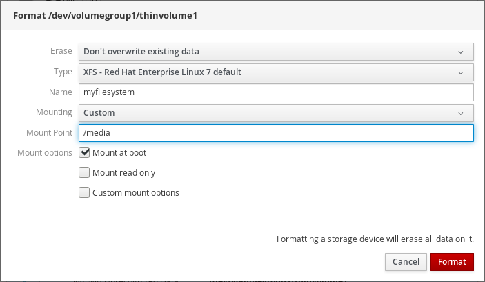
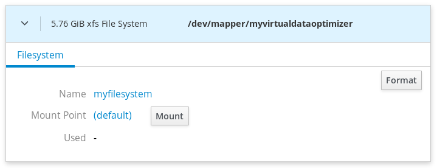
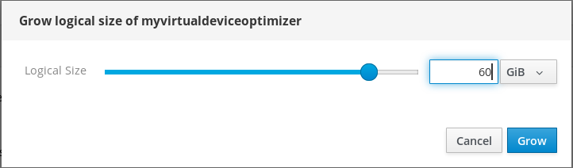

This chapter describes the Virtual Data Optimizer (VDO) configuration using the RHEL 8 web console. After reading it, you will be able to:
- Create VDO volumes
- Format VDO volumes
- Extend VDO volumes
The RHEL 8 web console is installed and accessible.
For details, see Installing the web console.
Red Hat Enterprise Linux 8 supports Virtual Data Optimizer (VDO). VDO is a block virtualization technology that combines:
- Compression
- For details, see Enabling or disabling compression in VDO.
- Deduplication
- For details, see Enabling or disabling deduplication in VDO.
- Thin provisioning
- For details, see Thinly-provisioned logical volumes (thin volumes).
Using these technologies, VDO:
- Saves storage space inline
- Compresses files
- Eliminates duplications
- Enables you to allocate more virtual space than how much the physical or logical storage provides
- Enables you to extend the virtual storage by growing
VDO can be created on top of many types of storage. In the RHEL 8 web console, you can configure VDO on top of:
LVM
Note
It is not possible to configure VDO on top of thinly-provisioned volumes.
- Physical volume
- Software RAID
For details about placement of VDO in the Storage Stack, see System Requirements.
Additional resources
- For details about VDO, see Deduplicating and compressing storage.
This section helps you to create a VDO volume in the RHEL web console.
Prerequisites
- Physical drives, LVMs, or RAID from which you want to create VDO.
Procedure
Log in to the RHEL 8 web console.
For details, see Logging in to the web console.
- Click Storage.
Click the + icon in the VDO Devices box.

- In the Name field, enter a name of a VDO volume without spaces.
- Select the drive that you want to use.
In the Logical Size bar, set up the size of the VDO volume. You can extend it more than ten times, but consider for what purpose you are creating the VDO volume:
- For active VMs or container storage, use logical size that is ten times the physical size of the volume.
- For object storage, use logical size that is three times the physical size of the volume.
For details, see Deploying VDO.
In the Index Memory bar, allocate memory for the VDO volume.
For details about VDO system requirements, see System Requirements.
Select the Compression option. This option can efficiently reduce various file formats.
For details, see Enabling or disabling compression in VDO.
Select the Deduplication option.
This option reduces the consumption of storage resources by eliminating multiple copies of duplicate blocks. For details, see Enabling or disabling deduplication in VDO.
- [Optional] If you want to use the VDO volume with applications that need a 512 bytes block size, select Use 512 Byte emulation. This reduces the performance of the VDO volume, but should be very rarely needed. If in doubt, leave it off.
Click Create.

If the process of creating the VDO volume succeeds, you can see the new VDO volume in the Storage section and format it with a file system.

VDO volumes act as physical drives. To use them, you need to format them with a file system.
Warning
Formatting VDO will erase all data on the volume.
The following steps describe the procedure to format VDO volumes.
Prerequisites
- A VDO volume is created. For details, see the section called “Creating VDO volumes in the web console”.
Procedure
Log in to the RHEL 8 web console.
For details, see Logging in to the web console.
- Click Storage.
- Click the VDO volume.
- Click on the Unrecognized Data tab.
Click Format.

In the Erase drop down menu, select:
- Don’t overwrite existing data
- The RHEL web console rewrites only the disk header. The advantage of this option is the speed of formatting.
- Overwrite existing data with zeros
- The RHEL web console rewrites the whole disk with zeros. This option is slower because the program has to go through the whole disk. Use this option if the disk includes any data and you need to rewrite them.
In the Type drop down menu, select a filesystem:
The XFS file system supports large logical volumes, switching physical drives online without outage, and growing. Leave this file system selected if you do not have a different strong preference.
XFS does not support shrinking volumes. Therefore, you will not be able to reduce volume formatted with XFS.
- The ext4 file system supports logical volumes, switching physical drives online without outage, growing, and shrinking.
You can also select a version with the LUKS (Linux Unified Key Setup) encryption, which allows you to encrypt the volume with a passphrase.
- In the Name field, enter the logical volume name.
In the Mounting drop down menu, select Custom.
The Default option does not ensure that the file system will be mounted on the next boot.
- In the Mount Point field, add the mount path.
Select Mount at boot.

Click Format.
Formatting can take several minutes depending on the used formatting options and the volume size.
After a successful finish, you can see the details of the formatted VDO volume on the Filesystem tab.

- To use the VDO volume, click Mount.
At this point, the system uses the mounted and formatted VDO volume.
This section describes extending VDO volumes in the RHEL 8 web console.
Prerequisites
- The VDO volume created.
Procedure
Log in to the RHEL 8 web console.
For details, see Logging in to the web console.
- Click Storage.
Click your VDO volume in the VDO Devices box.
- In the VDO volume details, click the Grow button.
In the Grow logical size of VDO dialog box, extend the logical size of the VDO volume.

Original size of the logical volume from the screenshot was 6 GB. As you can see, the RHEL web console enables you to grow the volume to more than ten times the size and it works correctly because of the compression and deduplication.
- Click Grow.
If the process of growing VDO succeeds, you can see the new size in the VDO volume details.